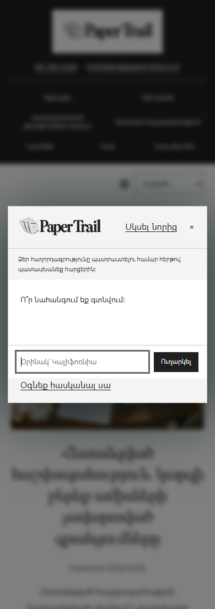
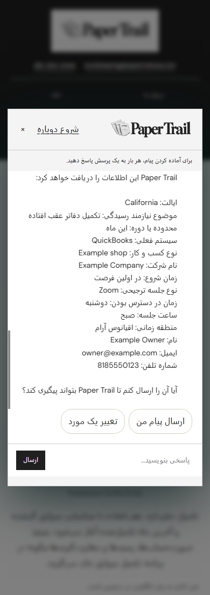
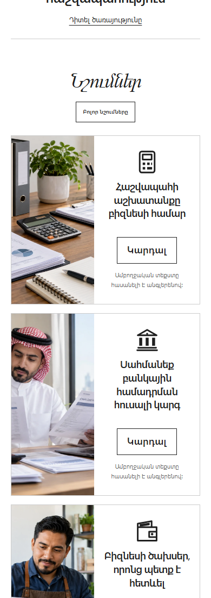
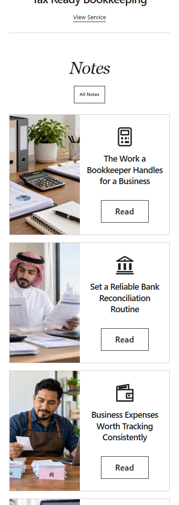
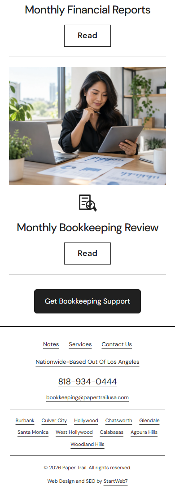
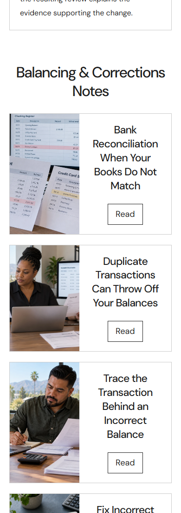
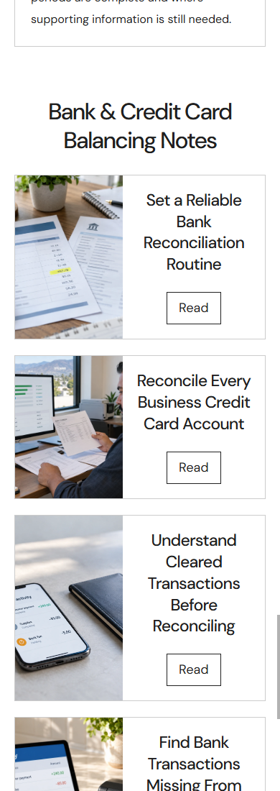

Localized chat and Notes cards
Home and Blog support buttons now open the guided conversation in the selected language. The same question order, canonical answer values and existing delivery fields are preserved. Questions, options, validation, review, editing and confirmation have saved local translations for all ten languages. Right to left chat text is supported.
Home Notes cards are unchanged. Their heading now sits above the All Notes button on phones. The unwanted Blog button is removed from Notes, with a moderate gap before Get Bookkeeping Support. All twelve service pages use the same photo left, title and Read button right composition as the About service cards, with photos filling their full image areas.
Verified 40 complete guided flows and 560 questions across Home and Blog at 320 and 390 pixels, plus 20 mocked delivery confirmations and 60 service page and width combinations. Native phone digit formats also passed. No real inquiry, Google API call, commit, push or publication occurred. Saved translations are locally authored; independent speaker review remains pending.
Actual chat screenshots




Notes layout











All service pages
Each page has four Notes cards. Open the page at phone width to inspect the universal layout.